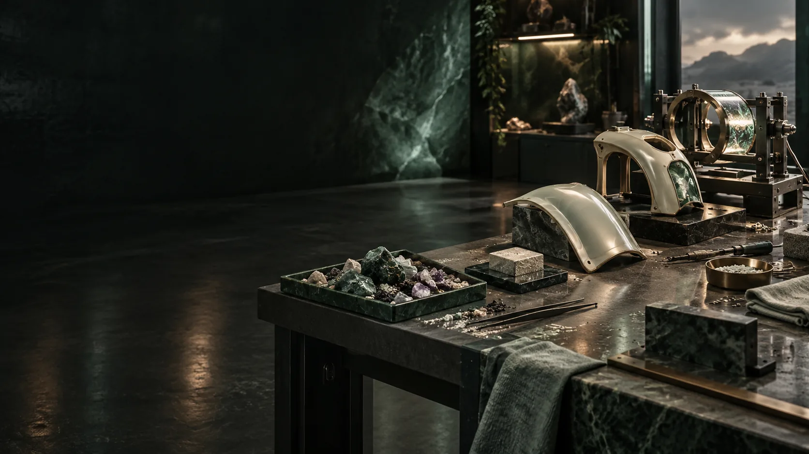

DEVELOPMENT / ACCEPTANCE BEFORE SCALE
Build what the next question needs.
The development plan covers personal data, session interfaces, materials, integrated compute and teacher training. Each work item records an owner, acceptance criteria, test results and a review date.
Personal foundation.
Category schema, source identity, three-self permissions, correction and portable export. Acceptance asks whether a participant finds a source, corrects it and controls a release.
Experience and integration.
A non-pressure screen prototype rehearses calendar selection, synchronised records and access. A later reviewed installation reconstructs qualifying intervals and interruptions. Rehearsals include interrupted-session recovery and restoration of the associated records.
Materials to assembly.
Traceable specimens advance to interfaces, curved panels and installed components. Crystalline work adds phase and field measurements; computational-shell work adds task, heat, reliability and service evidence.
Intelligence and teaching.
Retrieval and personal models face held-out tasks, meaning checks, leakage tests and repair. Teachers demonstrate an encounter, learner transfer and evidence-based revision. Civic projects ask affected people what changed.
A team with explicit responsibilities.
The role register covers participant relationships, pressure operations, materials, research, data, models, accessible interaction, teaching and civic coordination. Each current capability and open question has an owner, next experiment and review date.
Emergency egress is an acceptance gate.
Entry, door operation, assisted transfer and emergency extraction must conform to the applicable requirements for the actual chamber and site. The project retains dimensioned evidence, a reviewed emergency procedure and rehearsed acceptance before participant use.